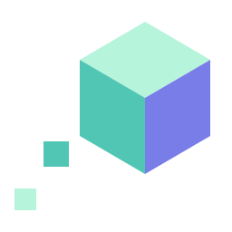
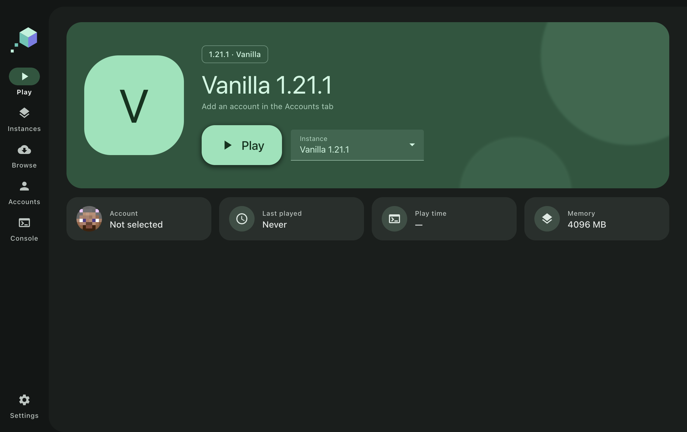

Keep worlds separate.
Give each instance its own mods, saves, and settings. Switch between Minecraft versions without mixing your files.

Aluma LauncherDifferent versions. Different mods. Your own space for every adventure. Meet Aluma, a simple launcher for Minecraft: Java Edition.
Built with Electron · Windows, macOS & Linux targets

Give each instance its own mods, saves, and settings. Switch between Minecraft versions without mixing your files.
Start with Vanilla or Fabric. Browse Modrinth and CurseForge, install mods, and manage them from the launcher.
Choose light or dark mode, your accent colour, language, and game settings. User data stays together in your .aluma folder.
Aluma Launcher is developed by UnderWeek. The source code is public, and feedback is welcome.
Aluma is currently in development. Packaged downloads are not available yet. Microsoft account sign-in is implemented; Minecraft Services API approval is pending before online account access can work.
Authentication takes place on Microsoft's sign-in page. Aluma uses the resulting tokens to request the Minecraft profile and launch the game; it does not collect your Microsoft password.